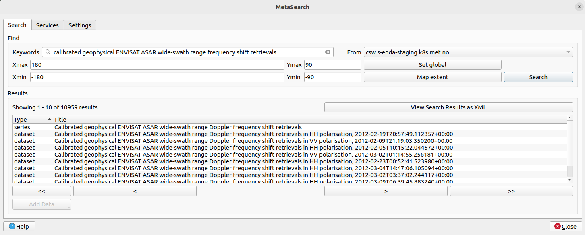
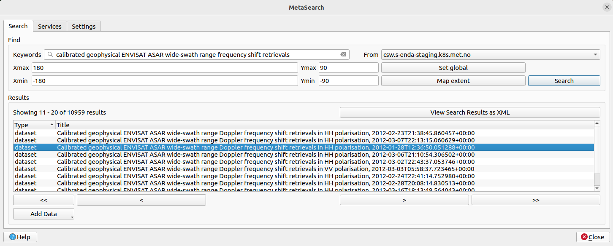
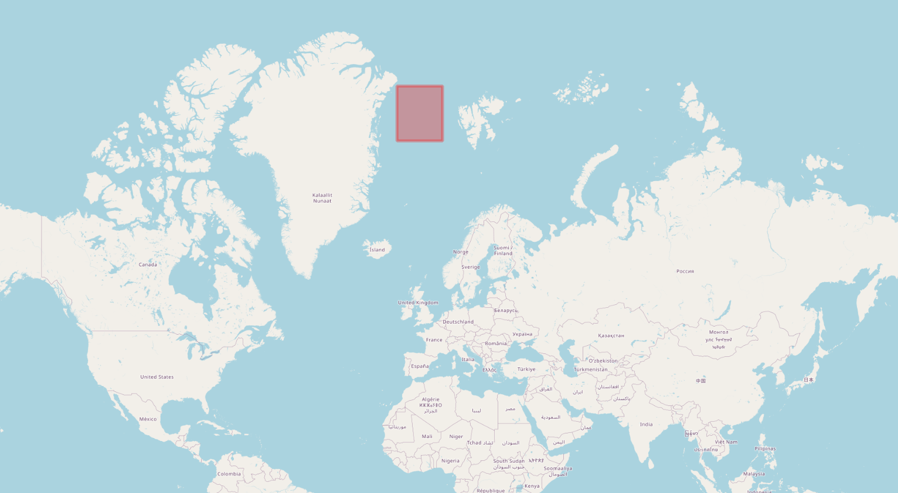
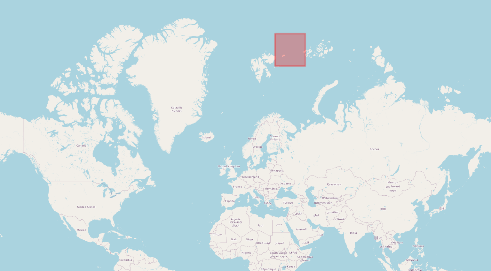

3. Use and Visualise Data#
This notebook serves as a manual on how to use and visualize the SAR Doppler data. This can be done in numerous ways. One alternative is already showcased in the visualisation part in the data.met.no section. However, in the following, two other options are presented: using the WMS functionalities of QGIS and plotting in Python.
3.1. Visualise Data Variables with WMS in QGIS#
Note: In the following guide, the endpoint
https://csw.s-enda-staging.k8s.met.nomust be replaced withhttps://data.csw.met.noto access data if you do not have access to the MET Norway staging site.
The MET Norway’s S-ENDA CSW catalog service is also available through QGIS. Desired series/datasets can therefore also be found and inspected as follows:
First open Qgis and select a map, e.g. the OpenStreetMap:

Select “Web > MetaSearch > MetaSearch” from the Menu:

Select “Services > New” to open the “New Catalog Service”:

Add the Required Server. For the “Name,” type “data.csw.met.no” (not “csw.s-enda-staging.k8s.met.no” as the image suggests). For the “URL,” type “https://data.csw.met.no” (not “https://csw.s-enda-staging.k8s.met.no” as the image suggests). Click “OK” to add the required server:

Without exiting “MetaSearch,” move back to the “Search” tab. Now the server that was just added is selected in the “From” menu (this should now be “data.csw.met.no”):

To get a list of the available series/datasets, there is the option to add different search parameters under the “Search” tab. Adding keywords will single out the series and datasets with these as part of their “Title”. To find the calibrated geophysical ENVISAT ASAR wide-swath range frequency shift retrievals series/datasets, the sequence in italics can be provided into the “Keywords” search tab, but “ENVISAT ASAR” or “Doppler” will also suffice. To actually search for datasets, click the “Search” option. The series/datasets will then show up in the “Results” section:

When a search is made, the results can alternatively be displayed as a scrollable list of XMLs. This is easily done by clicking “View Search Results as XML” in the “MetaSearch” window. This will open a new window, namely “XML Request / Response,” where the resulting series/datasets from the search are displayed as XML:

Moving back to the MetaSearch window, the possibility to quickly display the geographical extent of a selected series/dataset is available. By clicking one of the series/datasets, a red bounding box will pop up on the map highlighting the geographical extent of the selected dataset:


To further display the full record information alongside adherent links, double-click the selected series/dataset. A new window named “Record Metadata” will then be opened:


If the exact date and time of the desired dataset are known, they can be added alongside keywords like “ENVISAT ASAR” or “Doppler” in MetaSearch. This will single out the specific dataset:


There is also the possibility to alter the bounding box of the desired datasets. This box is altered by changing the latitude and longitude values found within the “Ymax/min” and “Xmax/min” search tabs, respectively. To quickly reset these to global default settings, click “Set Global.” Clicking “Map Extent” will limit the bounding box to the extent of the map:


Finally, to visualise one specific variable of the dataset, e.g., the geophysical Doppler, start by clicking the “Add Data” option when the desired dataset is selected. Select “Add WMS/WMTS”:

As shown below, choose the desired variable from the “Add Layer(s) from a WM(T)S Server” window that pops up. Click on “Add” in the lower right-hand corner to add the layer. The variable will then show up as a layer on the left-hand side menu along with the selected map. A visualization of the selected data variable should now be visible on the map.


3.2. Plotting Data Variables with Python#
One last alternative is presented here through the use of plotting functions in Python. These functions rely on the use of the Python libraries cartopy and xarray, along with some other packages. Therefore, the first step is to ensure that the required packages are installed and imported:
# Import the required packages:
import os
import glob
import xarray as xr
import matplotlib.pyplot as plt
import numpy as np
import cartopy.crs as ccrs
import cartopy.feature as cfeature
from matplotlib.colors import TwoSlopeNorm
from mpl_toolkits.axes_grid1.inset_locator import inset_axes
Next, select the dataset that contains the data to be plotted:
# Open a dataset using its OPENDAP URL
# (file from 2012-01-27T21:50:05)
# The backslashes serve as line breaks
ds = xr.open_dataset('''https://thredds.met.no/thredds/dodsC/\
remotesensingenvisat/asar-doppler/2012/01/27/\
ASA_WSDV2PRNMI20120127_215005_000612433111_00101_51839_0000.nc''')
ds
<xarray.Dataset> Size: 45MB
Dimensions: (y: 602, x: 851, zero_doppler_time: 602)
Coordinates:
* zero_doppler_time (zero_doppler_time) datetime64[ns] 5kB 2012-01-...
Dimensions without coordinates: y, x
Data variables: (12/23)
sensor_view_angle (y, x) float32 2MB ...
sigma0 (y, x) float32 2MB ...
subswath_number (y, x) float32 2MB ...
incidence_angle (y, x) float32 2MB ...
sensor_azimuth (y, x) float32 2MB ...
dc (y, x) float32 2MB ...
... ...
geophysical_doppler (y, x) float32 2MB ...
ground_range_current (y, x) float32 2MB ...
std_ground_range_current (y, x) float32 2MB ...
longitude (y, x) float32 2MB ...
latitude (y, x) float32 2MB ...
crs int32 4B ...
Attributes: (12/60)
GDAL: GDAL 3.2.1, released 2020/12/29
acknowledgement: GSAR IDL pre-processing software was develope...
azimuth_start_time: 2012-01-27T21:50:05.173597
contributor_email: jeong-won.park@kopri.re.kr, hjoh@norceresearc...
contributor_institution: Korea Polar Research Institute (KOPRI), NORCE...
contributor_name: Jeong-Won Park, Harald Johnsen, Geir Engen, M...
... ...
time_coverage_end: 2012-01-27T21:51:07.925870+00:00
time_coverage_start: 2012-01-27T21:50:04.077748+00:00
title: Calibrated geophysical ENVISAT ASAR wide-swat...
title_lang: en
summary_no: Kalibrert geofysisk Dopplerskift fra ENVISAT ...
title_no: Kalibrert geofysisk ENVISAT ASAR Dopplerskift...The netCDF file format combined with the xarray Python library makes it easy to plot different variables. The example below is arguably the easiest and most efficient way of plotting a variable from an opened xarray.Dataset. The metadata of the dataset in question is used to provide axis and colorbar labels.
In the following example, the variable geophysical_doppler from the xarray.Dataset (defined as ds) is plotted by simply using .plot(). Here the axis labels are automatically named “x” and “y” as these are the dimensions of geophysical_doppler. From the “Data variables” of the xarray.Dataset (see the interactive menu above), both the standard_name and the units (in square brackets) of the plotted variable geophysical_doppler are also automatically added as the colorbar label.
# Plotting a selected variable from the dataset opened above:
ds.geophysical_doppler.plot()
plt.show()
Below is a code snippet that easily extracts the desired files from the current directory (alternatively from “Downloads”) given a recognizable part of the filename. This is meant for extracting files that have been downloaded locally. For more information on how to download datasets, see How to Open Datasets.
### Opens Downloaded File
# ds_arctic = xr.open_dataset('ASA_WSDV2PRNMI20120127_
# 215005_000612433111_00101_51839_0000.nc')
# Downloaded file found in the current notebook folder
### Stores the path of the current directoy
path2files = os.getcwd()
# Alternative for when a dataset is downloaded locally
# and stored in "Downloads" - which is the default placement:
### Get the path of the home directory
# home_dir = os.path.expanduser("~")
#### Use os.path.join to combine paths
# path2files = os.path.join(home_dir, "Downloads")
### Specify something to recognize the desired nc-files,
# extract them and put them in a list
desired_files_paths = glob.glob(\
os.path.join(path2files,
"ASA_WSDV2PRNMI20120127*.nc"))
# Where "ASA_*.nc" is "filename_starts_with_str*filename_ends_with"
# Open the first (and only) dataset
ds = xr.open_dataset(sorted(desired_files_paths)[0])
# Interactive overview of the dataset
# - when opened as a jupyter notebook or a jupyter book
ds
<xarray.Dataset> Size: 45MB
Dimensions: (y: 602, x: 851, zero_doppler_time: 602)
Coordinates:
* zero_doppler_time (zero_doppler_time) datetime64[ns] 5kB 2012-01-...
Dimensions without coordinates: y, x
Data variables: (12/23)
sensor_view_angle (y, x) float32 2MB ...
sigma0 (y, x) float32 2MB ...
subswath_number (y, x) float32 2MB ...
incidence_angle (y, x) float32 2MB ...
sensor_azimuth (y, x) float32 2MB ...
dc (y, x) float32 2MB ...
... ...
geophysical_doppler (y, x) float32 2MB ...
ground_range_current (y, x) float32 2MB ...
std_ground_range_current (y, x) float32 2MB ...
longitude (y, x) float32 2MB ...
latitude (y, x) float32 2MB ...
crs int32 4B ...
Attributes: (12/60)
GDAL: GDAL 3.2.1, released 2020/12/29
acknowledgement: GSAR IDL pre-processing software was develope...
azimuth_start_time: 2012-01-27T21:50:05.173597
contributor_email: jeong-won.park@kopri.re.kr, hjoh@norceresearc...
contributor_institution: Korea Polar Research Institute (KOPRI), NORCE...
contributor_name: Jeong-Won Park, Harald Johnsen, Geir Engen, M...
... ...
time_coverage_end: 2012-01-27T21:51:07.925870+00:00
time_coverage_start: 2012-01-27T21:50:04.077748+00:00
title: Calibrated geophysical ENVISAT ASAR wide-swat...
title_lang: en
summary_no: Kalibrert geofysisk Dopplerskift fra ENVISAT ...
title_no: Kalibrert geofysisk ENVISAT ASAR Dopplerskift...3.2.1. Cartesian Plotting Function#
Below is an easy-to-use plotting function to visualise your desired data variable on a map. This function relies on the Python library cartopy, along with several other packages that are imported at the very beginning of this Plotting with Python section. It is also possible to set the spatial extent of the plot yourself; the default is plotting the spatial extent of the variable itself as defined in the metadata.
def plotting_variables_on_a_map(
ds, variable,
lat_min='default', lat_max='default',
lon_min='default', lon_max='default',
number_of_colorbar_intervals=100,
fractional_title_spacing=0.05,
title_fontsize=15,
cbar_label_fontsize=12):
"""
Function to plot a variable from an xarray.Dataset on a map using Cartopy.
Parameters:
ds (xarray.Dataset): The dataset containing the variable to plot.
variable (xarray.DataArray): The variable to be plotted.
lat_min, lat_max, lon_min, lon_max: Spatial extent of the plot.
number_of_colorbar_intervals (int): Number of intervals in the colorbar.
fractional_title_spacing (float): Spacing for the title.
title_fontsize (int): Font size for the title.
cbar_label_fontsize (int): Font size for the colorbar label.
"""
### Create a new xarray DataArray with latitude and longitude
# as coordinates
plotable_variable = variable.assign_coords(
{'lat': (('y', 'x'), ds.latitude.values),
'lon': (('y', 'x'), ds.longitude.values)
})
# Extract the geospatial extent of the variable to be plotted
lat_min = float(plotable_variable.lat.min()) if \
lat_min == 'default' else lat_min
lat_max = float(plotable_variable.lat.max()) if \
lat_max == 'default' else lat_max
lon_min = float(plotable_variable.lon.min()) if \
lon_min == 'default' else lon_min
lon_max = float(plotable_variable.lon.max()) if \
lon_max == 'default' else lon_max
# Create the main plot and set the projection
fig, ax = plt.subplots(1, figsize=(16, 12),
subplot_kw={'projection': ccrs.PlateCarree()})
ax.axis('off') # Turn off axes
ax.coastlines() # Add coastlines
### Create the gridlines and configure the labels
gl = ax.gridlines(draw_labels=True)
gl.bottom_labels = True # Default - Include bottom labels
gl.left_labels = True # Default - Include LH side labels
gl.top_labels = True # Default - Include top labels
gl.right_labels = False # Not default - Exclude RH side labels
# Define var_min, var_max, and var_step using the variable
# attribute minmax
var_min = int(plotable_variable.minmax.split(' ')[0])
var_max = int(plotable_variable.minmax.split(' ')[1])
var_step = (var_max - var_min) / number_of_colorbar_intervals
var_max += var_step # Adjust max value for better colorbar
# visuals
# Add features for land and ocean
ax.add_feature(cfeature.LAND, facecolor='tan',
zorder=2,
alpha=0.5) # Tan color for land
ax.add_feature(cfeature.OCEAN, facecolor='grey',
zorder=0) # Grey color for ocean
### Plot the data
cax = plotable_variable.plot.contourf(
ax=ax, x='lon', y='lat',
extend='neither',
norm=TwoSlopeNorm(vmin=var_min,
vcenter=0,
vmax=var_max),
levels=np.arange(var_min, var_max, var_step),
add_colorbar=False, # Do not automatically add colorbar
zorder = 1
)
### Create and inset axes for the colorbar
cbar_ax = inset_axes(
ax,
width="5%", # width = 5% of parent_bbox width
height="100%", # height : 100% of parent_bbox height
loc='lower left',
bbox_to_anchor=(1.05, 0., 1, 1),
bbox_transform=ax.transAxes,
borderpad=0
)
### Create colorbar
cbar = fig.colorbar(cax,
cax=cbar_ax,
orientation='vertical')
cbar.set_label(f'[{plotable_variable.units}]',
fontsize=cbar_label_fontsize)
# Set and adjust title
mid_lat = (lat_min + lat_max) / 2
mid_lon = (lon_min + lon_max) / 2
ax.text(
mid_lon,
lat_max+((lat_max - lat_min)*fractional_title_spacing),
f'{plotable_variable.long_name}',
fontsize=title_fontsize,
ha='center')
# Setting the extent on the map that is plotted
ax.set_ylim(lat_min, lat_max)
ax.set_xlim(lon_min, lon_max)
plt.show()
return
3.2.2. Cartesian Plotting Examples#
In the following, some examples on how to utilize the plotting function above (and their results) are shown.
### Plotting the desired variable within its geographical extent
# - By default using the metadata for the geographical extent as
# lat/lon min/max values.
### Plotting geophysical_doppler
plotting_variables_on_a_map(
ds=ds,
variable=ds.geophysical_doppler,
number_of_colorbar_intervals=100, # Default value
title_fontsize=15, # Default value
cbar_label_fontsize=12 # Default value
)
Then, some examples on how to alter the spatial extent of the map on which the selected variable is plotted (three examples showing Hawaii in the Pacific Ocean):
### Plotting geophysical_doppler
plotting_variables_on_a_map(
ds = ds,
variable = ds.geophysical_doppler,
lat_min = 15, lat_max = 30,
lon_min = -200, lon_max = -154,
number_of_colorbar_intervals = 100, # Default value
fractional_title_spacing = 0.10, # Default 0.05
title_fontsize = 30, # Default value
cbar_label_fontsize = 10 # Default 12
)

### Plotting geometric_doppler
plotting_variables_on_a_map(
ds = ds,
variable = ds.geometric_doppler,
lat_min = 15, lat_max = 30,
lon_min = -200, lon_max = -154,
number_of_colorbar_intervals = 100, # Default value
fractional_title_spacing = 0.10, # Default 0.05
title_fontsize = 30, # Default value
cbar_label_fontsize = 10 # Default 12
)

### Plotting wind_waves_doppler
plotting_variables_on_a_map(
ds = ds,
variable = ds.wind_waves_doppler,
lat_min = 15, lat_max = 30,
lon_min = -200, lon_max = -154,
number_of_colorbar_intervals = 100, # Default value
fractional_title_spacing = 0.20, # Default 0.05
title_fontsize = 30, # Default value
cbar_label_fontsize = 10 # Default 12
)

And finally, some data variable plotted on (half of) the world map:
### Plotting geophysical_doppler
plotting_variables_on_a_map(
ds = ds,
variable = ds.geophysical_doppler,
lat_min = -90, lat_max = 90,
lon_min = -180, lon_max = 0,
number_of_colorbar_intervals = 100, # Default value
fractional_title_spacing = 0.08, # Default 0.05
title_fontsize = 30, # Default 15
cbar_label_fontsize = 15 # Default 12
)

3.2.3. Plotting Function with Polar Projection#
As the SAR Doppler data is a great asset when researching areas at high latitudes, an additional example function is provided below that extracts and plots desired variables on a map with an Arctic projection. Again, the Python library cartopy is utilized.
def ArcticPlot_variables_on_a_map(
ds, variable, map_color,
map_start_longitude=-180, map_end_longitude=180,
map_edge_latitude=60, map_center_latitude=90,
title_fontsize=15, log_scale_option=False):
"""
Function to plot a variable from an xarray.Dataset on a map with an Arctic projection.
Parameters:
ds (xarray.Dataset): The dataset containing the variable to plot.
variable (xarray.DataArray): The variable to be plotted.
map_color (str): The color map for the plot.
map_start_longitude, map_end_longitude: Longitude boundaries for the map.
map_edge_latitude, map_center_latitude: Latitude boundaries for the map.
title_fontsize (int): Font size for the title.
log_scale_option (bool): Whether to plot the variable on a logarithmic scale.
"""
# Create a new xarray DataArray with latitude and longitude as coordinates
if log_scale_option: # Converting the linear backscatter values to dB (decibel)
plotable_variable = (np.log10(variable) * 10).assign_coords({
'lat': (('y', 'x'), ds.latitude.values),
'lon': (('y', 'x'), ds.longitude.values)
})
else:
plotable_variable = variable.assign_coords({
'lat': (('y', 'x'), ds.latitude.values),
'lon': (('y', 'x'), ds.longitude.values)
})
fig, ax = plt.subplots(1, figsize=(10, 6))
fig.suptitle(f'{variable.long_name}', fontsize=title_fontsize)
ax.axis('off') # Turn off axis
# Set the projection - NorthPolarStereo
ax = plt.axes(projection=ccrs.NorthPolarStereo())
ax.coastlines() # Adding coastlines
ax.set_extent([map_start_longitude,
map_end_longitude,
map_edge_latitude,
map_center_latitude],
crs=ccrs.PlateCarree()
)
# Add features for land and ocean
ax.add_feature(cfeature.LAND, facecolor='tan', # Tan color for land
zorder=2, alpha=0.5)
ax.add_feature(cfeature.OCEAN, facecolor='grey', # Grey color for ocean
zorder=0)
# Plot the data
if log_scale_option:
plotable_variable.plot.pcolormesh(
ax=ax, x='lon', y='lat',
transform=ccrs.PlateCarree(), # added transform argument
extend='neither',
cbar_kwargs={'label': 'Decibel [dB]'},
cmap=map_color,
zorder=1 # Placed second in line for plotting
)
else:
plotable_variable.plot.pcolormesh(
ax=ax, x='lon', y='lat',
transform=ccrs.PlateCarree(), # added transform argument
extend='neither',
cbar_kwargs={'label': f'[{variable.units}]'},
cmap=map_color,
zorder=1 # Placed second in line for plotting
)
# Draw gridlines on the map
gl = ax.gridlines(draw_labels=True)
plt.tight_layout()
plt.show()
return
3.2.4. Polar Projection Plotting Examples#
By obtaining a dataset from somewhere close to the Arctic, the plotting of different variables can be done as follows:
### Opens Downloaded file
# ds_arctic = xr.open_dataset(\
# 'ASA_WSDH2PRNMI20120322_111545_000623843113_00023_52623_0000.nc')
# Downloaded file found in the notebook folder
# Opens dataset through the associated OPENDAP-link
ds_arctic = xr.open_dataset('''https://thredds.met.no/thredds/dodsC/\
remotesensingenvisat/asar-doppler/2012/03/22/\
ASA_WSDH2PRNMI20120322_111545_000623843113_00023_52623_0000.nc''')
ds_arctic
<xarray.Dataset> Size: 46MB
Dimensions: (y: 611, x: 847, zero_doppler_time: 611)
Coordinates:
* zero_doppler_time (zero_doppler_time) datetime64[ns] 5kB 2012-03-...
Dimensions without coordinates: y, x
Data variables: (12/23)
sensor_view_angle (y, x) float32 2MB ...
sigma0 (y, x) float32 2MB ...
subswath_number (y, x) float32 2MB ...
incidence_angle (y, x) float32 2MB ...
sensor_azimuth (y, x) float32 2MB ...
dc (y, x) float32 2MB ...
... ...
geophysical_doppler (y, x) float32 2MB ...
ground_range_current (y, x) float32 2MB ...
std_ground_range_current (y, x) float32 2MB ...
longitude (y, x) float32 2MB ...
latitude (y, x) float32 2MB ...
crs int32 4B ...
Attributes: (12/60)
GDAL: GDAL 3.2.1, released 2020/12/29
acknowledgement: GSAR IDL pre-processing software was develope...
azimuth_start_time: 2012-03-22T11:15:45.996631
contributor_email: jeong-won.park@kopri.re.kr, hjoh@norceresearc...
contributor_institution: Korea Polar Research Institute (KOPRI), NORCE...
contributor_name: Jeong-Won Park, Harald Johnsen, Geir Engen, M...
... ...
time_coverage_end: 2012-03-22T11:16:49.974717+00:00
time_coverage_start: 2012-03-22T11:15:44.997749+00:00
title: Calibrated geophysical ENVISAT ASAR wide-swat...
title_lang: en
summary_no: Kalibrert geofysisk Dopplerskift fra ENVISAT ...
title_no: Kalibrert geofysisk ENVISAT ASAR Dopplerskift...Below are examples of how to plot a specified variable on the Arctic map. For each example, the map is progressively zoomed in on the data being plotted.
# The entire Arctic
ArcticPlot_variables_on_a_map(
ds=ds_arctic,
variable=ds_arctic.geophysical_doppler,
map_color='Blues_r',
map_start_longitude=-180,
map_end_longitude=180,
map_edge_latitude=65, # Default is 60
map_center_latitude=90, # Default is 90
title_fontsize=20 # Default is 15
)

# Zooming in on the Arctic Ocean
ArcticPlot_variables_on_a_map(
ds=ds_arctic,
variable=ds_arctic.geophysical_doppler,
map_color='Blues_r',
map_start_longitude=-180,
map_end_longitude=180,
map_edge_latitude=75, # Default is 60
map_center_latitude=90, # Default is 90
title_fontsize=20 # Default is 15
)

# A quarter of the sphere covering the Arctic Ocean
ArcticPlot_variables_on_a_map(
ds=ds_arctic,
variable=ds_arctic.geophysical_doppler,
map_color='Blues_r',
map_start_longitude=0,
map_end_longitude=90,
map_center_latitude=90, # Default is 90
map_edge_latitude=80, # Default is 60
title_fontsize=20 # Default is 15
)
# Close up of the plotted variable
ArcticPlot_variables_on_a_map(
ds=ds_arctic,
variable=ds_arctic.geophysical_doppler,
map_color='Blues_r',
map_start_longitude=0,
map_end_longitude=44,
map_center_latitude=86, # Default is 90
map_edge_latitude=80, # Default is 60
title_fontsize=20 # Default is 15
)

As an additional option, the plot below shows that the selected variable, in this instance backscatter (sigma0), can be plotted on a logarithmic scale [dB] by setting the log_scale_option to True.
# Close up of the variable plotted on a logarithmic scale [dB]
ArcticPlot_variables_on_a_map(
ds=ds_arctic,
variable=ds_arctic.sigma0,
map_color='gray_r',
map_start_longitude=0,
map_end_longitude=44,
map_center_latitude=86, # Default is 90
map_edge_latitude=80, # Default is 60
title_fontsize=20, # Default is 15
log_scale_option=True
)